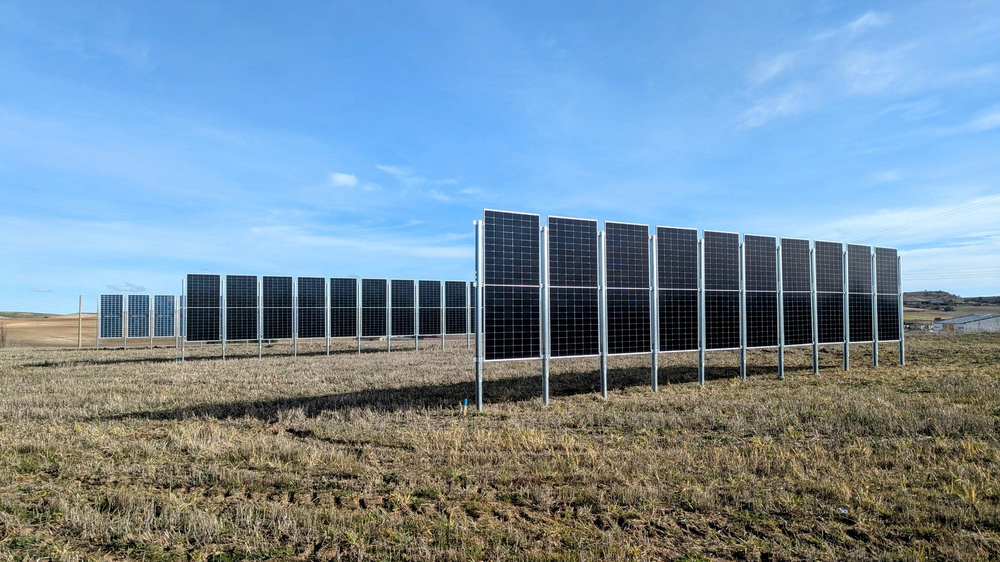

Brand · Guidelines
How Eki.Labs looks and speaks.
The logo, colours, type, words and photos behind everything with our name on it.
01 · Logo
The sun over three rows.
A sun and three crop rows: soil and sun, together. Use the full logo when there is room and the symbol on its own when there is not.


The symbolThe sun over three rows: soil and sun in one field.
Clear spaceKeep the height of the sun free around the logo. Minimum width of the full logo: 96 px.
NameThe logo is written eki.labs. In text we write Eki.Labs.
02 · Colour
Every colour has a job.
Nine tokens with one name each, the same in the web, the slides and the film.
Colour carries meaning: sol is energy, yerba is crops, tierra is land. Sol fills a background only for the one figure that matters most.
03 · Type
Three families, three roles.
A slab serif for what we say, a clean sans for how we explain it, a mono for the numbers.
Zilla SlabHeadlines · 400
Farming soil and sun, together.Work SansText · 400 / 500
Bifacial rows facing east and west leave the land to farming and produce when power is worth the most.Geist MonoData and labels · 500
−95% · +10% · +13%04 · Voice
Two lines, two roles.
The signature closes. The idea explains. Neither replaces the other.
SignatureFarming soil and sun, together.Covers, footers and closings. It signs every piece.
IdeaOne acre. Two harvests.Film, the solution chapter and brand slides. It explains what we do.
ToneShort, sure and concrete. Facts before adjectives.
Figures−95% land · +10% energy · +13% revenue, vs standard solar, one year of field data in Zamora.
WordsSolar rows, dual land use, agrivoltaics, farmers. Always the farm first.
05 · Photography
Real fields, low sun.
Photos show what we build and who we build it with.

Our own fields, rows and people. No stock.Low sun, morning or evening, when the rows produce the most.The crop and the panel in the same frame.Heroes draw themselves with photons: the photo turns into light dots in our colours.